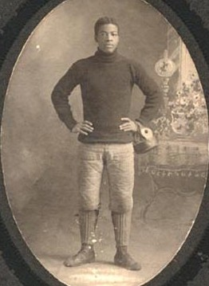

Checkpoint: Wooster
Welcome to the city of Wooster, Ohio! Wooster is home to such things as the Wayne County Courthouse,
as seen on the right (image courtesy of Herm's
long bicycle ride blog). Wooster has also been the home of several important historical figures, such as Marth Chase, a woman who
helped to discover that DNA is in fact what carries genetic information, rather than proteins. This had huge implications, as it inspired
other biologists to develop the helix model of DNA, provided part of the foundation for molecular biology, and helped to win the docotor
Chase worked with the Nobel Prize in 1969 (information courtesy of
The New York Times).
In addition, Wooster is home to several universities, including a sattelite campus for Ohio State University, and The College of Wooster.
Also of note is that this was the home of Charles Follis (pictured on the right). Follis was the first African-American to play professional
football. While at Wooster High School, he took part in organizing, played on, and served as captain of the varsity football team. During this
time, the team was undefeated and had never so much as been scored on, thanks in part to Follis himself. Due to his power and speed, Follis
often could break through defensive lines with ease. He went on to play in college, where he attracted the attention of the Shelby A.A. team.
A while after joining, the team became the fully professional Shelby Blues, making Follis the first African-American professional football player.
Though his time in the pros was short, he is still a historic player, breaking the race barrier for professional football in America. Unfortunately,
he experienced a wealth of problems on the field due to his skin color. Players on other teams would hit him after he was down, kick him, and target him.
Crowds were even worse; during one game, fans began screaming racial epithets at Follis until the captain of the opposing team told tem to stop.
Still, his place in football history is cemented not only for his skill, but for helping to desegregate the game of football
(all information from bleacherreport
image courtesy of blackpast.org).

To further explore Wooster, Ohio, click here.
Pedaling for Parkinson's does not claim any affiliation with Google Street View